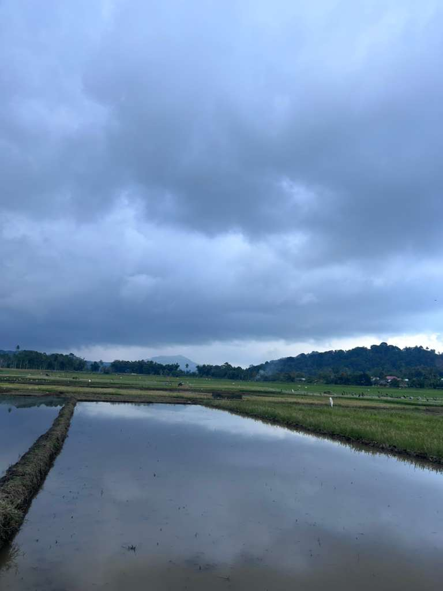
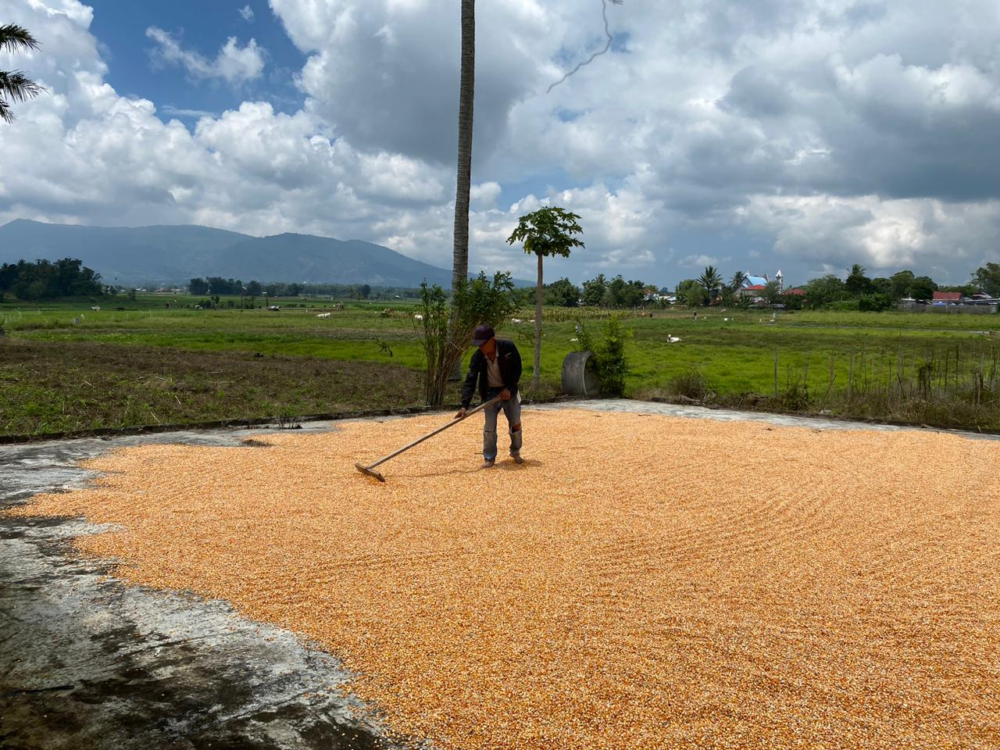

Sekilas Potensi Desa
Desa Tolok diberkahi dengan berbagai potensi yang menjadi kebanggaan kami.

Wisata Alam
Keindahan alam Desa Tolok seperti hamparan sawah hijau dan udara sejuk pegunungan menjadi daya tarik utama bagi pengunjung. Tempat yang ideal untuk bersantai, berfoto, atau menikmati suasana pedesaan yang tenang.
Lihat Detail
Peternakan
Masyarakat Desa Tolok banyak mengembangkan usaha peternakan sapi dan babi sebagai sumber ekonomi. Hasil ternak dimanfaatkan untuk kebutuhan lokal dan juga dijual ke pasar sekitar dengan kualitas yang terjaga.
Lihat Detail

Hasil Bumi
Tanah yang subur menjadikan Desa Tolok penghasil utama jagung dan Padi. Hasil panen menjadi salah satu penopang ekonomi warga serta sumber bahan pangan bagi daerah sekitarnya.
Lihat Detail